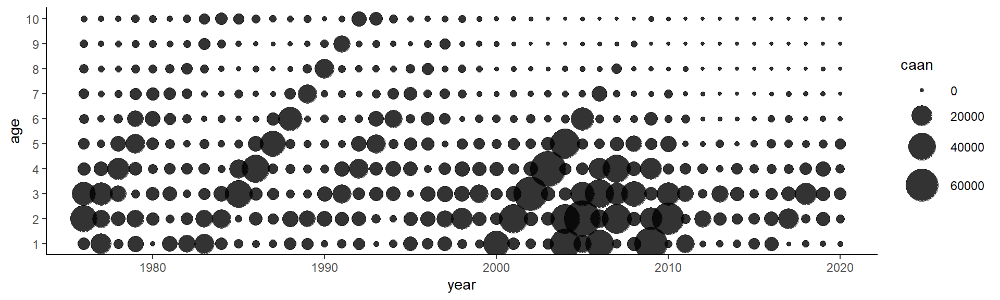
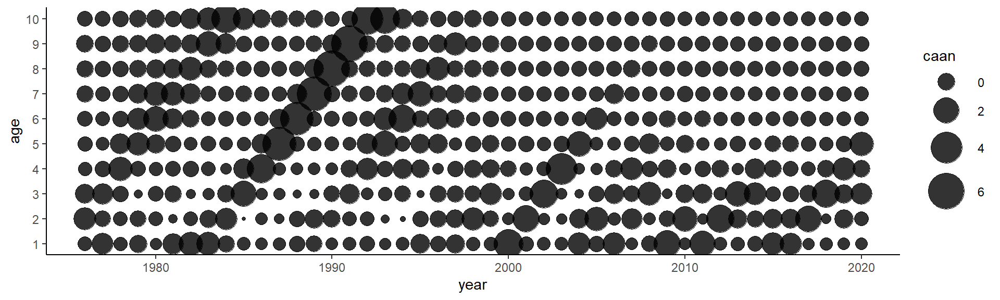
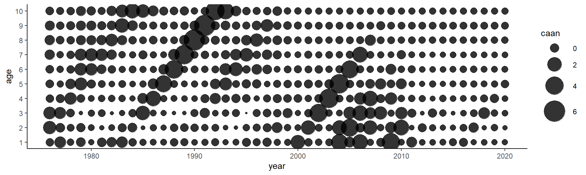
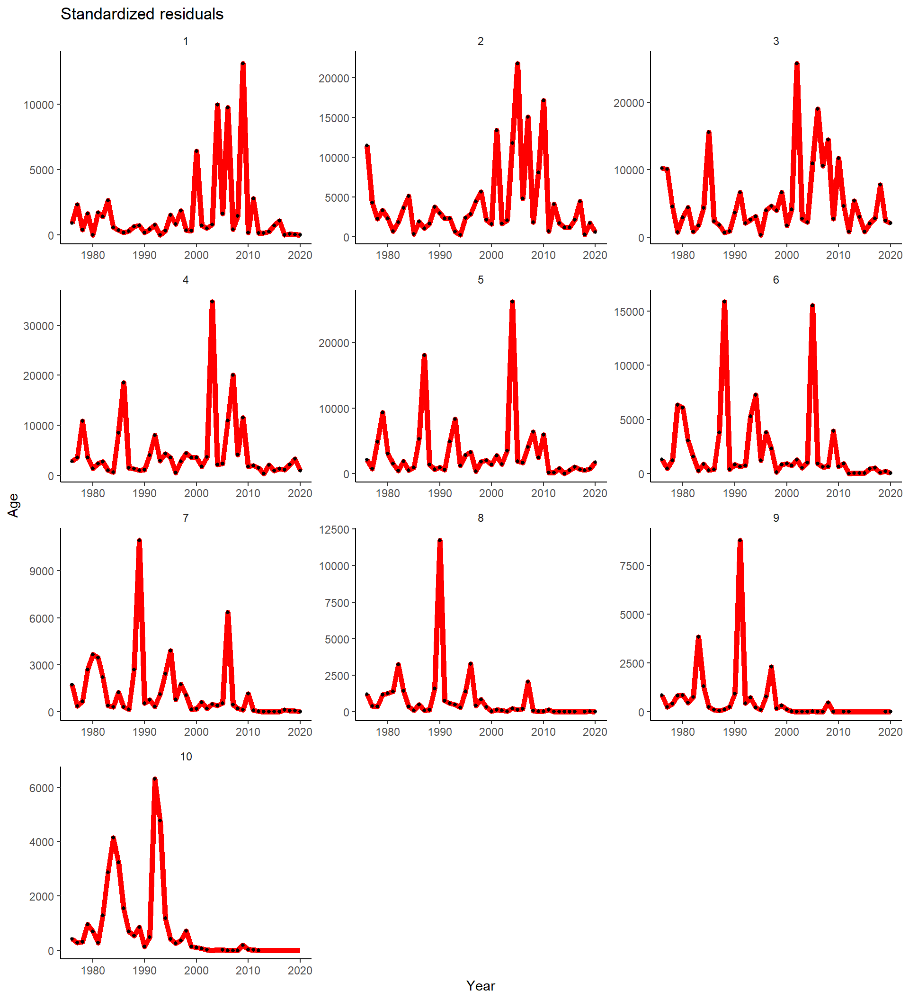
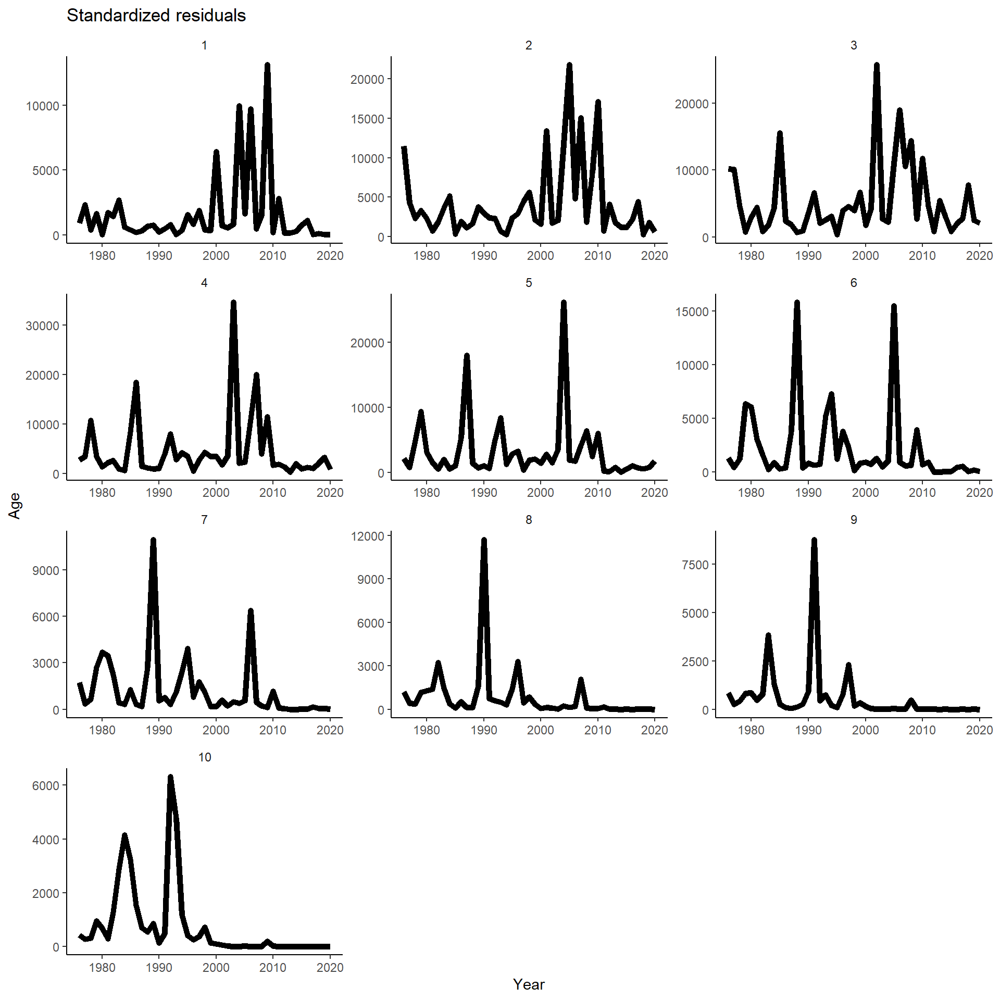
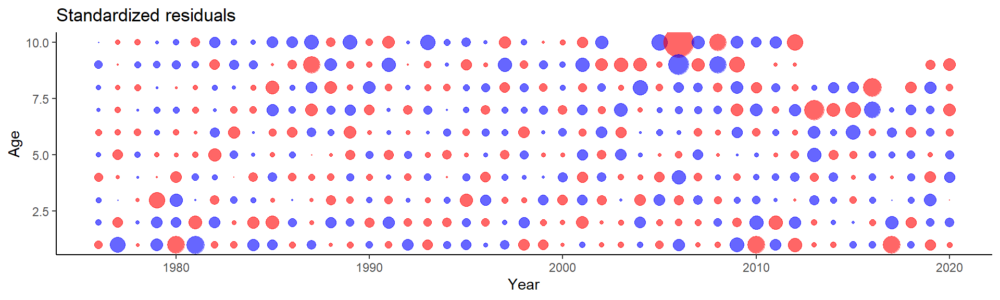
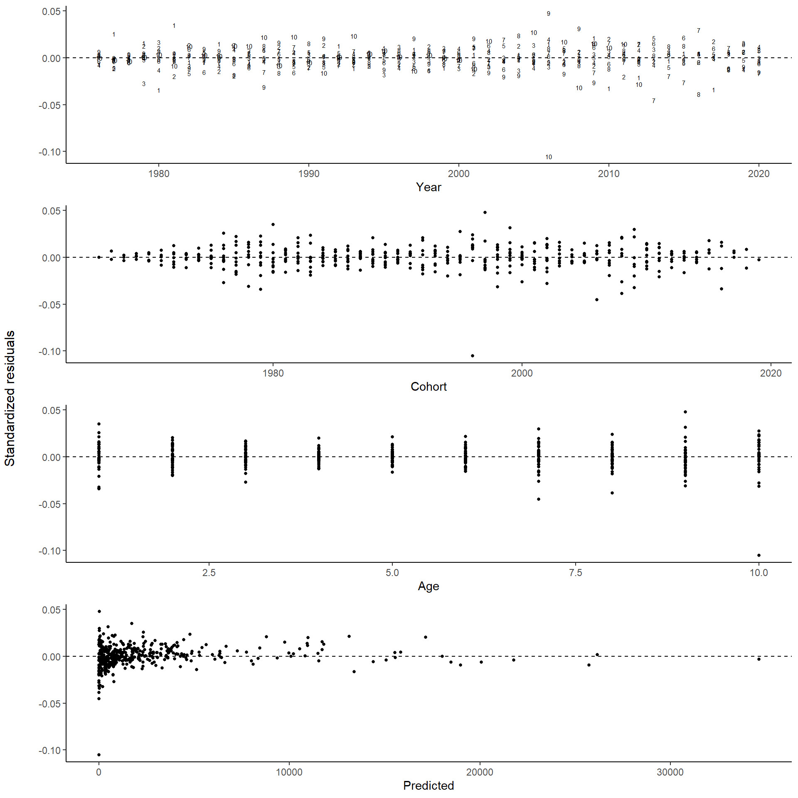
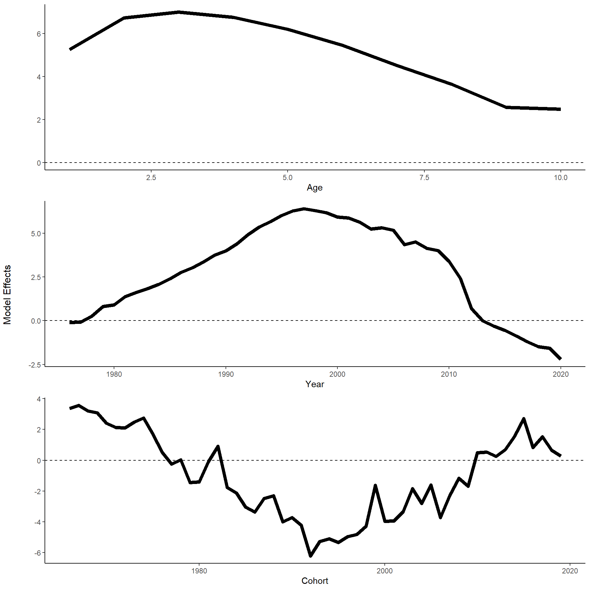
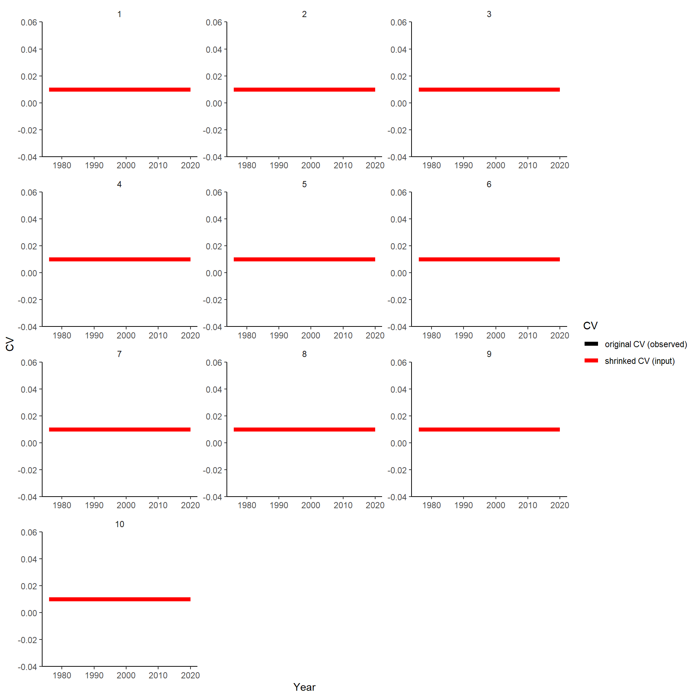

source('0.0_settings.R')
## Warning: replacing previous import 'dplyr::combine' by 'gridExtra::combine' when loading 'catchR'load(paste0(dir.rdat, "caa.Rdata"))ggplot(caa,aes(x=year,y=age))+
geom_point(alpha=0.8,aes(size=caan))+
scale_size(range = c(1,12))+
scale_y_continuous(breaks=min(caa$age):max(caa$age))
d <- reshape2::dcast(caa,age~year,value.var = 'caan')
d <- cbind(age=d[,1],spay(d[,-1]))
d <- reshape2::melt(d,id.vars='age',variable.name='year',value.name='caan')
d$year <- as.numeric(as.character(d$year))
ggplot(d,aes(x=year,y=age))+
geom_point(alpha=0.8,aes(size=caan))+
scale_size(range = c(1,12))+
scale_y_continuous(breaks=min(caa$age):max(caa$age)) ### SPYA
d <- reshape2::dcast(caa,age~year,value.var = 'caan')
d <- cbind(age=d[,1],spya(d[,-1]))
d <- reshape2::melt(d,id.vars='age',variable.name='year',value.name='caan')
d$year <- as.numeric(as.character(d$year))
ggplot(d,aes(x=year,y=age))+
geom_point(alpha=0.8,aes(size=caan))+
scale_size(range = c(1,12))+
scale_y_continuous(breaks=min(caa$age):max(caa$age))
caa$cv <- 0.01 # need to calculate this!! this is absurdly small value so all predictions will match observed
caa[caa$caaw==0,'caaw'] <- NA # should be correct in get.caa function
waa.fit <- with(caa, armatrix.fit(year=year,age=age,x=caaw,cv=cv))
## Optimizing tape... Done
## Matching hessian patterns... Done
## outer mgc: 55971.88
## outer mgc: 55971.88
## 0: 32731.476: 6.30396 7.82383 8.13710 7.90717 7.37406 6.63404 5.73338 5.01149 4.72914 5.07457 -2.30259 -2.30259 -2.30259 0.00000 0.00000 0.00000 0.00000
## outer mgc: 9331.288
## outer mgc: 6104.86
## outer mgc: 655.4597
## outer mgc: 421.7007
## outer mgc: 117.0943
## outer mgc: 39.97081
## outer mgc: 36.85182
## outer mgc: 56.50398
## outer mgc: 17.77199
## outer mgc: 25.2216
## 10: 679.18150: 6.59856 7.95221 8.37078 8.10911 7.54100 6.68325 5.80574 4.76367 3.93812 4.00941 -2.80928 0.165671 0.373586 -0.0332971 0.325942 0.550983 -0.320431
## outer mgc: 5.168966
## outer mgc: 14.875
## outer mgc: 3.016282
## outer mgc: 10.12578
## outer mgc: 1.672727
## outer mgc: 0.6582046
## outer mgc: 2.168907
## outer mgc: 1.179423
## outer mgc: 0.5553559
## outer mgc: 0.6066918
## 20: 677.46475: 6.57979 8.05935 8.30113 8.01618 7.42609 6.65545 5.69417 4.80856 3.83763 3.99009 -2.80270 0.300520 0.363321 -0.0186094 0.586698 0.603242 -0.190714
## outer mgc: 0.5871071
## outer mgc: 0.1941349
## outer mgc: 0.3719003
## outer mgc: 0.2467324
## outer mgc: 0.2647975
## outer mgc: 0.2947762
## outer mgc: 0.1586442
## outer mgc: 0.3379785
## outer mgc: 0.3501651
## outer mgc: 0.7136306
## 30: 677.44137: 6.53543 7.99021 8.23285 7.95566 7.36237 6.58507 5.62392 4.73660 3.76725 3.91092 -2.91837 0.320745 0.360700 0.127195 0.636908 0.594342 -0.180572
## outer mgc: 0.3244635
## outer mgc: 0.720333
## outer mgc: 0.1789356
## outer mgc: 0.4475335
## outer mgc: 0.4014407
## outer mgc: 0.3844801
## outer mgc: 0.1080962
## outer mgc: 0.09994047
## outer mgc: 0.2446187
## outer mgc: 0.3927194
## 40: 677.42038: 6.52918 7.99257 8.24122 7.96325 7.36898 6.58551 5.62534 4.74678 3.77119 3.91792 -3.50953 0.319163 0.361356 1.81677 0.630675 0.592360 -0.176445
## outer mgc: 0.9191138
## outer mgc: 1.448877
## outer mgc: 0.7139494
## outer mgc: 1.147152
## outer mgc: 0.4967227
## outer mgc: 0.6925389
## outer mgc: 0.3966466
## outer mgc: 0.9034324
## outer mgc: 0.5065411
## outer mgc: 1.738303
## 50: 677.36311: 6.45343 7.93488 8.20344 7.93090 7.33635 6.55169 5.60618 4.74864 3.77080 3.91872 -1.72889 0.304769 0.361836 4.40259 0.597639 0.576003 -0.165813
## outer mgc: 1.056915
## outer mgc: 5.789755
## outer mgc: 9.111801
## outer mgc: 5.869544
## outer mgc: 9.008849
## outer mgc: 63.19735
## outer mgc: 55.53282
## outer mgc: 6.177205
## outer mgc: 19.2113
## outer mgc: 20.69458
## 60: 661.03767: 6.29876 7.81086 8.06584 7.84336 7.19626 6.46710 5.54486 4.66494 3.68507 3.65216 1.09312 0.675026 0.0572092 3.78878 1.43206 0.0869252 -0.967366
## outer mgc: 3.915894
## outer mgc: 7.415242
## outer mgc: 3.071421
## outer mgc: 4.480365
## outer mgc: 4.068202
## outer mgc: 2.322743
## outer mgc: 1.687362
## outer mgc: 1.062995
## outer mgc: 0.7078419
## outer mgc: 0.1374733
## 70: 658.24430: 6.12852 7.60222 7.87873 7.63063 7.06909 6.32220 5.38259 4.49911 3.43727 3.35040 1.17834 1.21368 0.0446590 3.95573 2.76099 -0.0571201 -1.16086
## outer mgc: 0.1706212
## outer mgc: 0.05329729
## outer mgc: 0.07312334
## outer mgc: 0.1221758
## outer mgc: 0.2970232
## outer mgc: 0.3408785
## outer mgc: 0.1627333
## outer mgc: 0.0359216
## outer mgc: 0.02968018
## outer mgc: 0.003005967
## 80: 658.21429: 5.26800 6.74076 7.01301 6.76686 6.20215 5.45762 4.51856 3.64144 2.57872 2.49110 1.20770 1.20343 0.0450532 4.01893 2.73804 -0.0550310 -1.15804
## outer mgc: 0.0009056479
## outer mgc: 0.0003474182
## outer mgc: 0.0003474182
## outer mgc: 0.02423559
## outer mgc: 0.0243807
## outer mgc: 0.03988227
## outer mgc: 0.03975415
## outer mgc: 0.04012487
## outer mgc: 0.04022603
## outer mgc: 0.0402464
## outer mgc: 0.04053131
## outer mgc: 0.04078013
## outer mgc: 0.04017628
## outer mgc: 0.04022983
## outer mgc: 0.04067232
## outer mgc: 0.04025616
## outer mgc: 0.04003062
## outer mgc: 0.03791069
## outer mgc: 0.03800684
## outer mgc: 0.03374574
## outer mgc: 0.0330509
## outer mgc: 0.01892229
## outer mgc: 0.01950998
## outer mgc: 0.04484207
## outer mgc: 0.04470013
## outer mgc: 0.08859258
## outer mgc: 0.08917406
## outer mgc: 0.7048053
## outer mgc: 0.7056925
## outer mgc: 0.0208424
## outer mgc: 0.02099175
## outer mgc: 0.04022455
## outer mgc: 0.0397298
## outer mgc: 0.1141687
## outer mgc: 0.1144901
## outer mgc: 0.03422076
## outer mgc: 0.03462288
## outer mgc: 1
armatrix.predobs(waa.fit,scale='free',ncol=3)
## Warning: Removed 18 rows containing missing values (geom_point).
armatrix.pred(waa.fit,scale='free',ncol=3)
armatrix.res(waa.fit)
## Warning: Removed 18 rows containing missing values (geom_point).
armatrix.res2(waa.fit)
## Warning: Removed 18 rows containing missing values (geom_text).
## Warning: Removed 18 rows containing missing values (geom_point).
## Warning: Removed 18 rows containing missing values (geom_point).
## Warning: Removed 18 rows containing missing values (geom_point).
armatrix.effects(waa.fit) # empty plot because of ggplotGrob function within (used to align plots)
armatrix.cvs(waa.fit,scale='free',ncol=3)